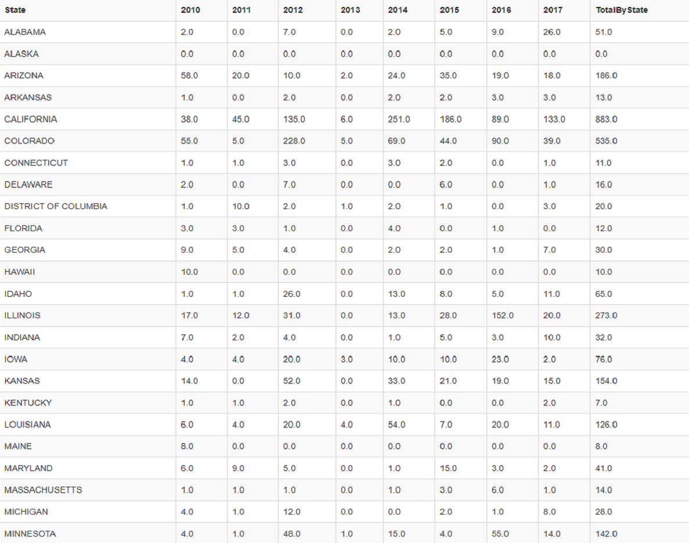

ElizabethYim
Data Analyst
Front End Developer
Visual Designer
Hello
I'm a Data Analyst with a pharmaceutical background who focuses on writing organized and efficient code—all with an eye for streamlined visuals and clean, beautiful designs.
When I'm not crunching numbers, you'll find me rollerskating, postponing the death of my plants, or stealing socks back from my dog.
Technical Skills
Education
-
2018
George Washington University
Data Analytics Boot Camp CertificatePart-time six-month program that covered major data analytics topics, including: Python 3 programming, social media mining, front-end visualization, geomapping, big data analytics, machine learning, predictive statistics, data modeling, and database manipulation. -
2017
Virginia Commonwealth University
Bachelors of Science: Interdisciplinary Science
Minors: Biology, Chemistry
Studied the core sciences (emphasis on biology and chemistry) and their relation to interdisciplinary issues, with the intention of applying to pharmacy school.Relevant Courses: Applications of Statistics, Research Methods in the Social Sciences -
2014
Northern Virginia Community College
General StudiesRelevant Course: Calculus I with Analytic Geometry
Portfolio
Wine Quality Analysis
An analysis of wine reviews from Kaggle that explores the various relationships among rating, country of origin, and price.
Click image to view project.

West Nile Visualizations
A series of visualizations of data from Project Tycho, a University of Pittsburg project that compiles and standardizes global datasets of infectious diseases.
Click image to view project.
An interactive map of reported West Nile cases from 2010 to 2017 in the United States.

A cleaned dataset of reported West Nile cases from 2010 to 2017 in the United States.
An interactive bar chart of reported West Nile cases from 2010 to 2017 by state.
An interactive line graph of reported West Nile cases from 2010 to 2017 by year.
Til Death Do Us Chart
A deep-dive study using machine learning to predict marital status using data from the National Longitudinal Survey of Youth 1997.
Click image to view project.
Experience
Certified Pharmacy Technician